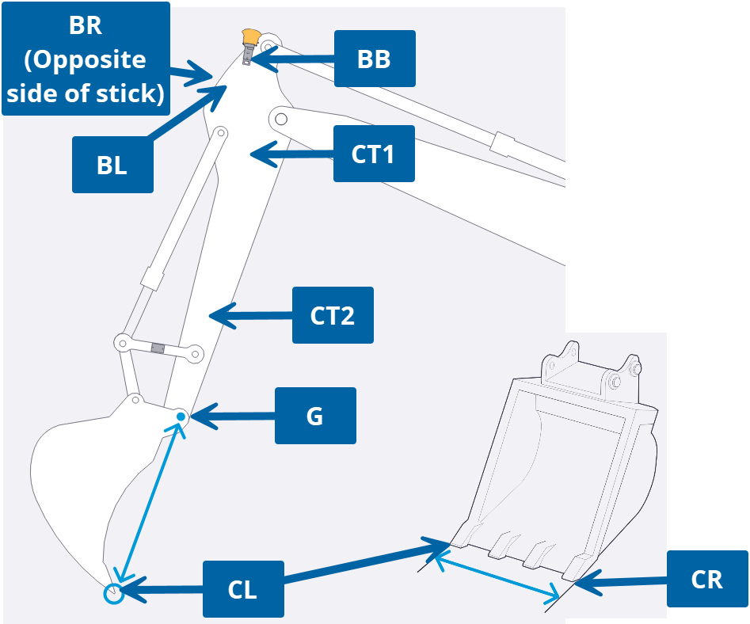

Siteworks Excavator (BETA) — upload your survey CSV, choose total-station or manual tape methods, and get machine measure-up values. Expand How to use this calculator below for positioning tips and required survey points. Optional PDF export after results. Request BETA access to try it while it is being vetted.
Measurements
Match your Siteworks project units before computing results.
Total station: CSV must include BL and BR (plus BB, CT1, CT2, G, CL). Confirm bracket offset matches your welment (default 0.030 ft / 0.009 m).
Important: Place equidistant targets on opposite sides of the stick (BR on the hidden side).
Manual tape: Enter full stick width (BL to BR) and bracket offset. BL and BR are not required in the CSV.
Total station: CSV must include CR with CL for Siteworks Attachment width (mandatory: BB, CT1, CT2, G, CL).
Manual tape: Enter measured bucket/attachment width for Siteworks Attachment width. CR is optional in the CSV.
Survey data
Shoot all mandatory points from one total station setup without moving the machine. Extend the stick roughly between true vertical and fully extended (away from cab). Set the bucket on the ground so the stick and attachment form workable triangles for the IMU sensors — avoid a vertical bucket IMU attitude and avoid placing the cutting edge directly below the pivot pin (G). This lets you capture stick and bucket geometry in the same shot.
Mandatory CSV points: BB, CT1, CT2, G, CL. CT1 nearest R780 receiver · CT2 nearest pivot pin (G).
• CT1 — closest to R780 receiver · CT2 — closest to pivot pin (G)
• BL / BR — opposite sides of the stick; use equidistant targets (BR on the hidden side)
• BB — bottom bolt of GNSS bracket · CL / CR — cutting-edge corners
• See How to use this calculator above for minimum shots and total-station vs manual tape methods

| Measurement | Result |
|---|
Optional report details
Fill in only what you want on the PDF header. Skip anything you do not need.
Upload your dealer logo for the PDF header — stored on this device only.
Technician Assistant · Excavator measure-up v1.0 (BETA)